Путь «Тиран»
От слабой к сильной: Seq 9 «Моряк» → Seq 1 «Бог Грома». Сменить путь можно на «Солнце» или «Зритель» — с Seq 5 и сильнее, зельем на ступень выше (как).
| Seq | Последовательность | Ступень сервера |
|---|---|---|
| 9 | Моряк | II |
| 8 | Яростный | III |
| 7 | Мореход | IV |
| 6 | Благословлённый Ветром | V |
| 5 | Певец Океана | VI |
| 4 | Погребатель Катастроф | VII |
| 3 | Морской Король | VIII |
| 2 | Бедствие | — |
| 1 | Бог Грома | — |
У каждой последовательности: зелье и его ингредиенты (главный — первым), способности, которые она открывает, и отыгрыш — действия, которые переваривают зелье. Ингредиенты указаны с двумя самыми доступными источниками; все — по ссылке. Ингредиенты Seq 9–6 этого пути бывают и в товарах у жителя Торговец Потусторонних — у каждого по 2 случайных предложения на уровень (цены).
Seq 9 · Моряк
Зелье  Моряк Зелье, формула
Моряк Зелье, формула  Моряк Рецепт зелья (Последовательность 9). Эта Seq нужна для ступени II.
Моряк Рецепт зелья (Последовательность 9). Эта Seq нужна для ступени II.
Ингредиенты
 Пузырь мурлока — сундук: Постройки Мира духов — 41 %; существо мода: Мурлок (водится: океаны) — 26 % за убийство. Все источники (3)
Пузырь мурлока — сундук: Постройки Мира духов — 41 %; существо мода: Мурлок (водится: океаны) — 26 % за убийство. Все источники (3) Крепкий спирт — крафт: верстак. Все источники (2)
Крепкий спирт — крафт: верстак. Все источники (2) Кровь глубоководного марлина — существо мода: Мурлок (водится: океаны) — 9,2 % за убийство. Все источники (2)
Кровь глубоководного марлина — существо мода: Мурлок (водится: океаны) — 9,2 % за убийство. Все источники (2) Ламинария — обычный предмет
Ламинария — обычный предмет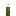
Морской огурец — обычный предмет
Способности
- Медитация — Медитировать, восполняя духовность
- Иллюзорная чешуя — Окружить себя иллюзорной чешуёй, повышающей сопротивление
- Физическое усиление (пассивная)
Отыгрыш — переваривание за действие и перерыв между засчитанными:
- Плыть на лодке — 0,95 %, раз в 10 с
- Поймать рыбу — 0,95 %, раз в 10 с
- Использовать картографический стол — 0,47 %, раз в 10 с
- Плыть под водой — 0,28 %, раз в 10 с
- Выпить зелье подводного дыхания — 0,47 %, раз в 10 с
- Взглянуть на компас — 0,38 %, раз в 8 с
- Создать удочку — 0,38 %, раз в 15 с
- Стоять под дождём — 0,19 %, раз в 15 с
Seq 8 · Яростный
Зелье 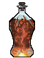 Яростный Рецепт зелья (Последовательность 8). Эта Seq нужна для ступени III.
Яростный Рецепт зелья (Последовательность 8). Эта Seq нужна для ступени III.
Ингредиенты
 Глазное яблоко драконоглазого кондора — существо мода: Дервиш (водится: Мир духов; приходит и Ночью Мира духов) — 17 % за убийство. Все источники (2)
Глазное яблоко драконоглазого кондора — существо мода: Дервиш (водится: Мир духов; приходит и Ночью Мира духов) — 17 % за убийство. Все источники (2) Дистиллированный спирт — крафт: печь. Все источники (2)
Дистиллированный спирт — крафт: печь. Все источники (2) Перья синего теневого сокола — существо мода: Дервиш (водится: Мир духов; приходит и Ночью Мира духов) — 28 % за убийство. Все источники (2)
Перья синего теневого сокола — существо мода: Дервиш (водится: Мир духов; приходит и Ночью Мира духов) — 28 % за убийство. Все источники (2) Осколок призмарина — обычный предмет
Осколок призмарина — обычный предмет Мембрана фантома — обычный предмет
Мембрана фантома — обычный предмет
Способности
- Гнев — Впасть в ярость, повысив силу и скорость ценой части рассудка
- Яростные удары — Серия мощных ударов по противнику
Отыгрыш — переваривание за действие и перерыв между засчитанными:
- Выпить зелье — 0,84 %, раз в 10 с
- Убить при низком здоровье — 1,3 %, раз в 2 с
- Атаковать более сильного моба — 0,84 %, раз в 5 с
- Выжить на грани смерти — 0,5 %, раз в 5 с
- Убить голыми руками — 0,5 %, раз в 5 с
- Получить урон, будучи в меньшинстве — 0,42 %, раз в 5 с
- Выпить зелье силы — 0,5 %, раз в 10 с
Seq 7 · Мореход
Зелье 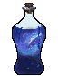 Мореход Рецепт зелья (Последовательность 7). Эта Seq нужна для ступени IV.
Мореход Рецепт зелья (Последовательность 7). Эта Seq нужна для ступени IV.
Ингредиенты
 Древний бортовой журнал — существо мода: Кролик знаний (водится: Мир духов) — 33 % за убийство. Все источники (2)
Древний бортовой журнал — существо мода: Кролик знаний (водится: Мир духов) — 33 % за убийство. Все источники (2)- Крепкий спирт — крафт: верстак. Все источники (2)
- Кровь глубоководного марлина — существо мода: Мурлок (водится: океаны) — 9,2 % за убийство. Все источники (2)
 Кристалл призмарина — обычный предмет
Кристалл призмарина — обычный предмет Раковина наутилуса — обычный предмет
Раковина наутилуса — обычный предмет
Способности
- Управление водой — Управлять водой, нанося урон противнику
Отыгрыш — переваривание за действие и перерыв между засчитанными:
- Использовать картографический стол — 0,74 %, раз в 10 с
- Взглянуть на компас — 0,37 %, раз в 8 с
- Посмотреть в подзорную трубу — 0,37 %, раз в 8 с
- Создать карту — 0,44 %, раз в 15 с
- Выудить сокровище — 0,44 %, раз в 20 с
- Плыть на лодке — 0,44 %, раз в 10 с
- Выпить зелье подводного дыхания — 0,37 %, раз в 10 с
Seq 6 · Благословлённый Ветром
Зелье 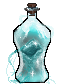 Благословлённый Ветром Рецепт зелья (Последовательность 6). Эта Seq нужна для ступени V.
Благословлённый Ветром Рецепт зелья (Последовательность 6). Эта Seq нужна для ступени V.
Ингредиенты
 Кристаллические перья Синего теневого сокола — существо мода: Дервиш (водится: Мир духов; приходит и Ночью Мира духов) — 17 % за убийство. Все источники (2)
Кристаллические перья Синего теневого сокола — существо мода: Дервиш (водится: Мир духов; приходит и Ночью Мира духов) — 17 % за убийство. Все источники (2)- Глазное яблоко драконоглазого кондора — существо мода: Дервиш (водится: Мир духов; приходит и Ночью Мира духов) — 17 % за убийство. Все источники (2)
 Эфирное масло граба — пустая бутылка: Дубовое бревно (в биоме: Березняк, Реликтовый березняк) — 50 % за попытку, бутылка остывает 1 с. Все источники (2)
Эфирное масло граба — пустая бутылка: Дубовое бревно (в биоме: Березняк, Реликтовый березняк) — 50 % за попытку, бутылка остывает 1 с. Все источники (2) Перо — обычный предмет
Перо — обычный предмет Бутылочка — обычный предмет
Бутылочка — обычный предмет
Способности
- Управление ветром — Управлять ветром, нанося урон противнику
- Благословения ветра — Усилить себя благословениями ветра
Отыгрыш — переваривание за действие и перерыв между засчитанными:
- Убить, будучи в меньшинстве — 0,63 %, раз в 5 с
- Ехать в вагонетке — 0,32 %, раз в 10 с
- Использовать окружение — 0,63 %, раз в 15 с
- Бежать — 0,13 %, раз в 5 с
- Убить на большой высоте — 0,5 %, раз в 5 с
- Запустить фейерверк — 0,25 %, раз в 1 с
- Стоять под дождём — 0,13 %, раз в 15 с
Seq 5 · Певец Океана
Зелье 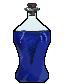 Певец Океана Рецепт зелья (Последовательность 5). Эта Seq нужна для ступени VI.
Певец Океана Рецепт зелья (Последовательность 5). Эта Seq нужна для ступени VI.
Ингредиенты
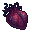
Голосовой мешок сирены — существо мода: Мурлок (водится: океаны) — 3,7 % за убийство.- Кровь глубоководного марлина — существо мода: Мурлок (водится: океаны) — 9,2 % за убийство. Все источники (2)
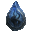
Кристаллизованная кровь кальмара Лавоса — существо мода: Мурлок (водится: океаны) — 9,2 % за убийство.- Раковина наутилуса — обычный предмет
- Кристалл призмарина — обычный предмет
Способности
- Духовное зрение
- Молния — Призвать молнии на противника
- Песнь сирены — Песнь, по-разному влияющая на противника
- Громовая стрела (пассивная) — Ваши стрелы напоены молнией, что сильно их усиливает
Отыгрыш — переваривание за действие и перерыв между засчитанными:
- Использовать нотный блок — 0,53 %, раз в 10 с
- Покормить животное — 0,26 %, раз в 10 с
- Применить «Песнь сирены» — 1,1 %, раз в 20 с
- Использовать проигрыватель — 0,32 %, раз в 15 с
- Приручить животное — 0,26 %, раз в 15 с
- Плыть под водой — 0,16 %, раз в 10 с
Seq 4 · Погребатель Катастроф
Зелье 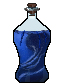 Погребатель Катастроф Рецепт зелья (Последовательность 4). Эта Seq нужна для ступени VII.
Погребатель Катастроф Рецепт зелья (Последовательность 4). Эта Seq нужна для ступени VII.
Ингредиенты
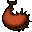
Желудок кита кары — добыча: Древний страж — 100 % за убийство; добыча: Страж (убить игроком) — 2 % за убийство.- Крепкий спирт — крафт: верстак. Все источники (2)
 Кровь Бестеневого демонического волка — добыча: Волк (ночью; во второй руке пустая бутылка, она тратится) — 35 % за убийство игроком; существо мода: Мрачный Жнец (водится: Мир духов, Подземный мир; приходит и Ночью Мира духов) — 6,5 % за убийство. Все источники (4)
Кровь Бестеневого демонического волка — добыча: Волк (ночью; во второй руке пустая бутылка, она тратится) — 35 % за убийство игроком; существо мода: Мрачный Жнец (водится: Мир духов, Подземный мир; приходит и Ночью Мира духов) — 6,5 % за убийство. Все источники (4) Сердце моря — обычный предмет
Сердце моря — обычный предмет Трубчатый коралл — обычный предмет
Трубчатый коралл — обычный предмет
Способности
- Гадание
- Мифическая форма
- Сильная молния — Призвать мощную молнию на противника
- Цунами — Призвать цунами и смыть противника
- Землетрясение — Сотрясти землю, нанося урон противнику
- Ураган — Призвать ураган, разрывающий противника
- Рёв — Оглушительный рёв, ранящий врагов
- Власть над водой — Полная власть над водой
- Тягун (пассивная) — Способности Потустороннего усиливаются, пока вы в воде
Отыгрыш — переваривание за действие и перерыв между засчитанными:
- Поставить динамит — 0,42 %, раз в 10 с
- Убить сильного моба — 0,42 %, раз в 5 с
- Атаковать более сильного моба — 0,42 %, раз в 5 с
- Разрушить спавнер — 0,34 %, раз в 30 с
- Создать динамит — 0,21 %, раз в 20 с
Seq 3 · Морской Король
Зелье 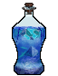 Морской Король Рецепт зелья (Последовательность 3). Эта Seq нужна для ступени VIII.
Морской Король Рецепт зелья (Последовательность 3). Эта Seq нужна для ступени VIII.
Ингредиенты
- Глаз Короля Зелёных Крыл — существо мода: Погибель (водится: Мир духов; приходит и Ночью Мира духов) — 1,7 % за убийство.
- Голосовой мешок сирены — существо мода: Мурлок (водится: океаны) — 3,7 % за убийство.
 Глаза осьминога — существо мода: Мурлок (водится: океаны) — 3,7 % за убийство. Все источники (2)
Глаза осьминога — существо мода: Мурлок (водится: океаны) — 3,7 % за убийство. Все источники (2)- Осколок призмарина — обычный предмет
- Морской источник — обычный предмет
Способности
- Проливной ливень — Вызвать сильный ливень, ранящий противника
- Грозовая буря — Призвать грозовую бурю, обрушивающую град молний на противника
- Гнев океана — Призвать гнев океана: вскипятить всю воду или изгнать из океана всех не водных существ
- Раскат грома — Раскат грома
- Ветвистая молния — Выпустить молнию, расходящуюся ветвями
Отыгрыш — переваривание за действие и перерыв между засчитанными:
- Приручить животное — 0,32 %, раз в 15 с
- Убить сильного моба — 0,47 %, раз в 5 с
- Плыть на лодке — 0,16 %, раз в 10 с
- Использовать маяк — 0,25 %, раз в 30 с
- Убить в воде — 0,25 %, раз в 5 с
- Поставить флаг — 0,16 %, раз в 20 с
Seq 2 · Бедствие
Зелье 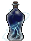 Бедствие Рецепт зелья (Последовательность 2).
Бедствие Рецепт зелья (Последовательность 2).
Ингредиенты
 Бедствие Характеристика Потустороннего (Последовательность 2) — характеристика Потустороннего
Бедствие Характеристика Потустороннего (Последовательность 2) — характеристика Потустороннего- Желудок кита кары — добыча: Древний страж — 100 % за убийство; добыча: Страж (убить игроком) — 2 % за убийство.
 Кровь Солнечной божественной птицы — существо мода: Погибель (водится: Мир духов; приходит и Ночью Мира духов) — 5 % за убийство.
Кровь Солнечной божественной птицы — существо мода: Погибель (водится: Мир духов; приходит и Ночью Мира духов) — 5 % за убийство.- Сердце моря — обычный предмет
 Трезубец — обычный предмет
Трезубец — обычный предмет
Способности
- Власть ангела — Ангельская сила: странствуйте по Миру духов и сокрушайте артефакты
- Сотворение бедствия — Обрушить бедствие на область, где вы стоите
Отыгрыш — переваривание за действие и перерыв между засчитанными:
- Поджечь — 0,21 %, раз в 5 с
- Поставить динамит — 0,21 %, раз в 10 с
- Применить «Сотворение бедствия» — 0,63 %, раз в 20 с
- Убить под дождём — 0,13 %, раз в 5 с
- Разрушить спавнер — 0,17 %, раз в 30 с
Seq 1 · Бог Грома
Зелье 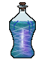 Бог Грома Рецепт зелья (Последовательность 1).
Бог Грома Рецепт зелья (Последовательность 1).
Ингредиенты
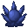
Бог Грома Характеристика Потустороннего (Последовательность 1) — характеристика Потустороннего- Глаз Короля Зелёных Крыл — существо мода: Погибель (водится: Мир духов; приходит и Ночью Мира духов) — 1,7 % за убийство.
 Червь времени — существо мода: Погибель (водится: Мир духов; приходит и Ночью Мира духов) — 1,7 % за убийство.
Червь времени — существо мода: Погибель (водится: Мир духов; приходит и Ночью Мира духов) — 1,7 % за убийство.- Громоотвод — обычный предмет
- Сердце моря — обычный предмет
Способности
- Преображение в энергию — Обратить тело в чистую энергию
- Небесная кара — Низвести божественную молнию на противника
- Электромагнитный смерч — Призвать электромагнитный смерч
- Рёв Бога Грома — Крик бога, сокрушающий врагов
Отыгрыш — переваривание за действие и перерыв между засчитанными:
- Убить сильного моба — 0,16 %, раз в 5 с
- Убить, будучи в меньшинстве — 0,11 %, раз в 5 с
- Применить «Небесная кара» — 0,32 %, раз в 20 с
- Убить босса — 0,21 %, раз в 1 мин
- Убить под дождём — 0,084 %, раз в 5 с
- Стоять на большой высоте — 0,042 %, раз в 20 с